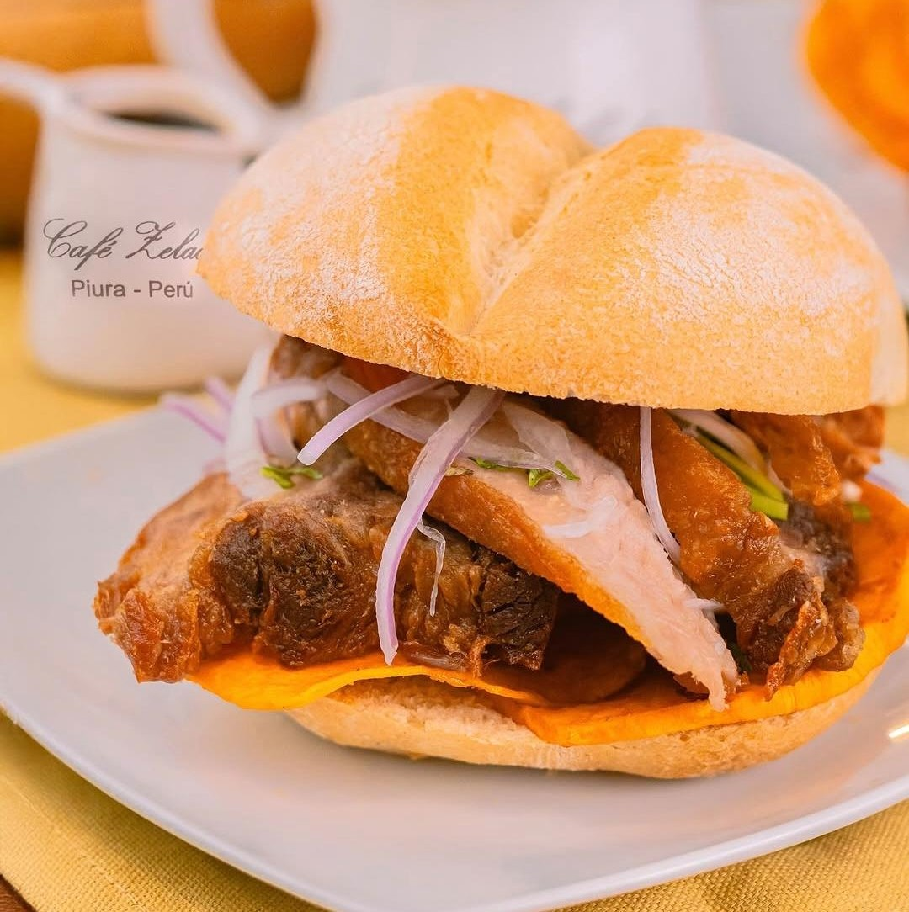
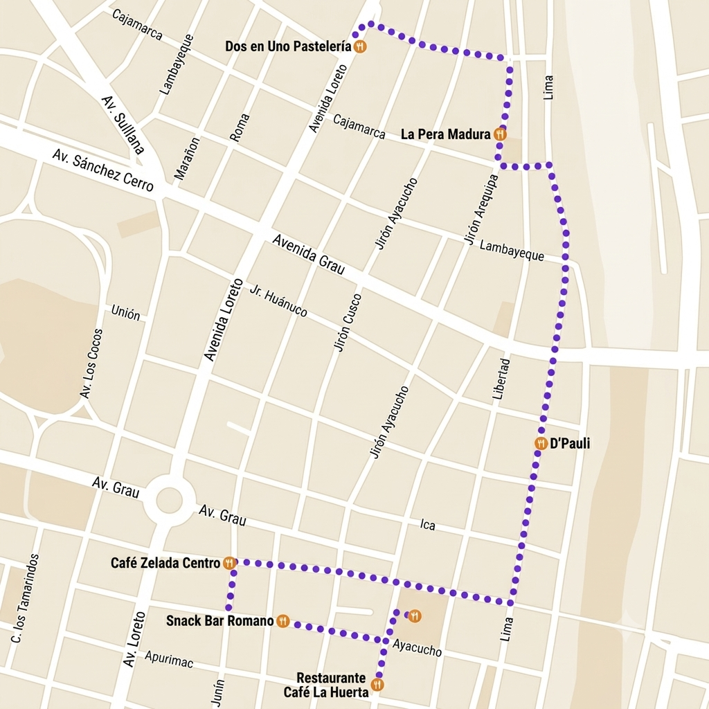
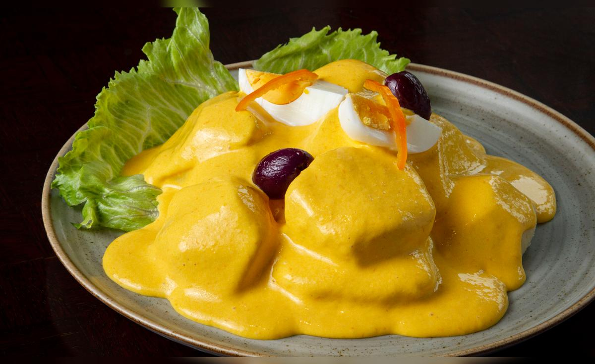
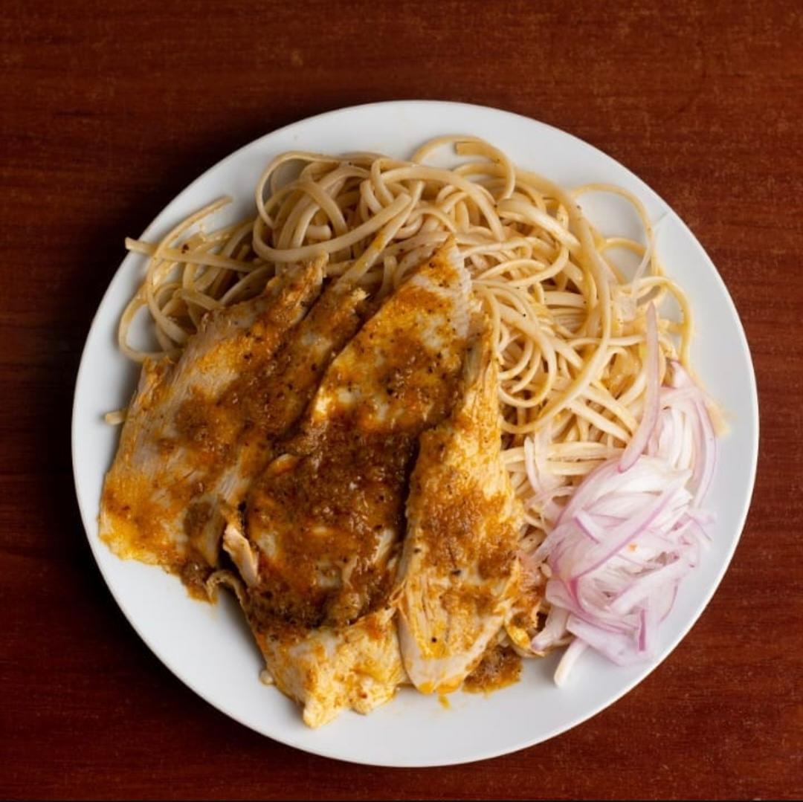
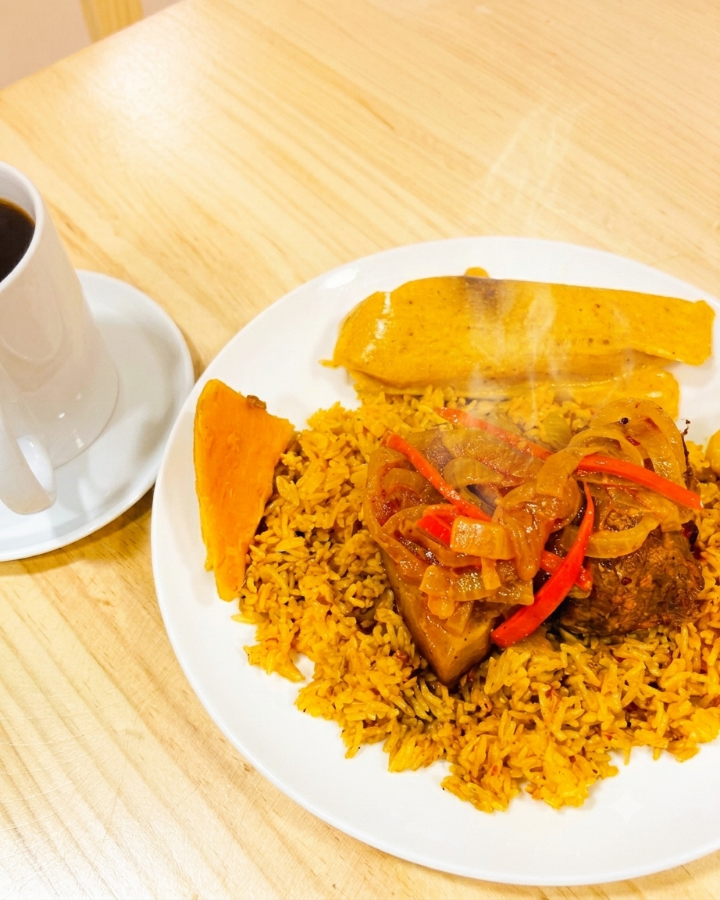
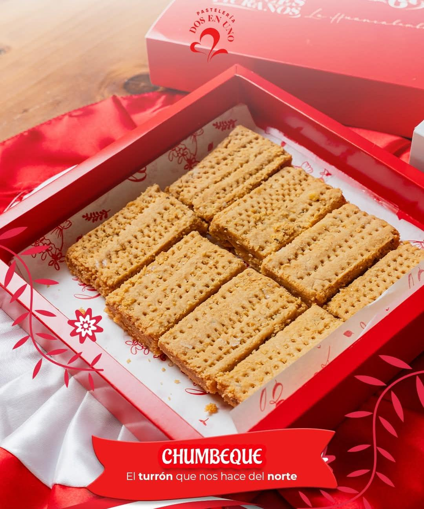
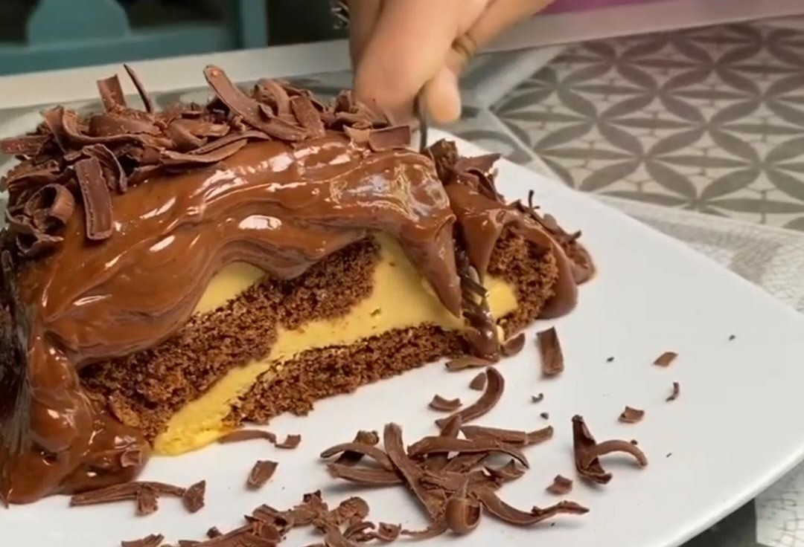

1
Café Zelada
Cafetería tradicional en Piura fundada hace 68 años. Ofrece un exquisito café de Canchaque y apetitosos sándwiches.
Plato a degustar: Sandwich de pechuga de pavo con sarsa criolla y chifles.
🍽 Sabor local
Seis paradas para descubrir la auténtica cocina piurana, plato a plato, en una sola noche.
Reservar este tourSeis paradas en los lugares más auténticos de Piura.


Cafetería tradicional en Piura fundada hace 68 años. Ofrece un exquisito café de Canchaque y apetitosos sándwiches.
Plato a degustar: Sandwich de pechuga de pavo con sarsa criolla y chifles.

Es un clásico resturante piurano que desde hace más de 40 años ha venido contando historias a través de la comida.
Platos a degustar: Tamal verde con sarsa criolla y papa a la huancaina.

Restaurante piurano con más de 50 años repartiendo sabores intensos y un inolvidable toque casero.
Plato a degustar: Tallarín con pavo y chifles.

Restaurante-café que, por más de 60 años, ha venido escribiendo la esencia de Piura en el paladar de los piuranos.
Plato a degustar: Frito piurano.

Pastelería clásica que, desde 1968, ha venido uniendo generaciones a través de postres elaborados con dedicación piurana.
Postres a degustar: Pastel de boda, cocada al horno, tofis (maní, pecanas, pasas), chumbeque y torta de viento.

Cafetería que, desde 1992, ha venido endulzando a los piuranos. En su pequeño y acogedor ambiente, invita a degustar los postres más deliciosos de la ciudad.
Postres a degustar: Pionono de chocolate con lúcuma, encanelado y torta de zanahoria.
Reserva la próxima ruta gastronómica y prueba Piura en seis pasos.
Reservar este tour